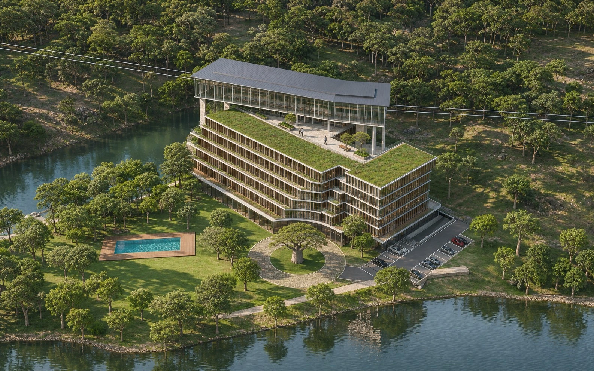
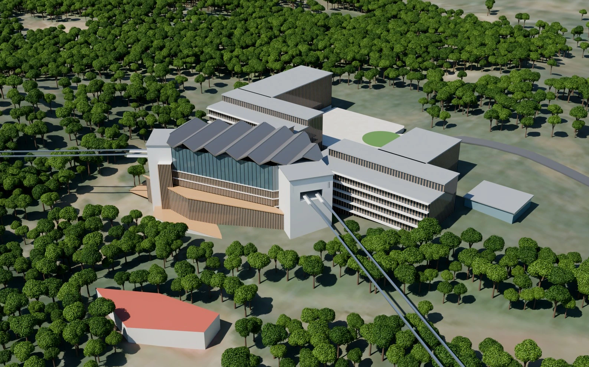
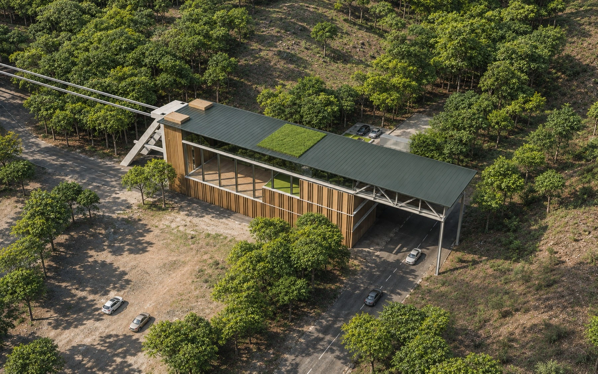

纜車尚未開放搭乘全線鳥瞰・實景模擬
EXPLORE THE ROUTE
從哪一站開始？
從入口轉乘、湖畔住宿，到山城聚會與森林散步。選一站，看看有哪些體驗。
四站路線站序示意・非地理比例
THE VIRTUAL RIDE
先搭一趟虎頭埤纜車
從新化小鎮出發，沿湖經過旅館與山城，再抵達林間。選擇一站起程，看看沿線如何串在一起。
四站行車模擬互動示意・尚未開放搭乘
跨湖在新化之門與湖濱旅館之間湖濱旅館站坐落湖岸半島，湖濱山城站位於陸地丘陵，兩站之間不跨水。
拖曳進度可查看沿線。動畫時間經過縮時，地景與車輛為示意，非正式班表或工程圖。
STATION VISITOR GUIDE
分站深度導覽
選一站，再從總覽往下探索。這些導覽介紹開放後的遊程；服務時間、實際動線及預約方式，以營運公告為準。
PLAN YOUR VISIT
想怎麼玩虎頭埤？
先按興趣挑選。以下是開放後可參考的行程構想，餐飲、住宿及活動依各站正式公開資訊為準。



圖片為實景模擬，不是目前設施現況。
BEFORE YOU GO
出發前先確認
纜車尚未開放，本站不提供購票或訂房。若現在要到虎頭埤遊玩，請查閱既有風景區的官方資訊。
現在可以搭纜車或買票嗎？
還不行。開放日期、票價、售票方式與服務時間，以營運方正式公告為準。
之後從哪裡開始搭乘？
新化之門站是主要入口與轉乘站。搭乘動線、上下客位置及停車資訊，開放前會另行公布。
帶長輩、小孩或輪椅，出發前要確認什麼？
開放後請先確認各站無障礙進出、上下車協助、輪椅或嬰兒車搭乘規則，以及湖畔與林間步行路況。詳細資訊待營運方公布。
旅館、婚宴與會議現在可以預約嗎？
本站不接受預訂；將來的開放資訊與服務內容，由各服務業者公告。